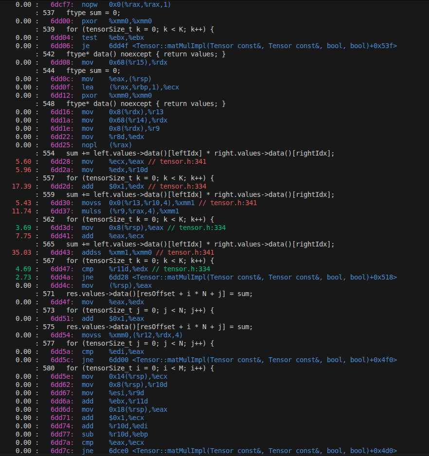
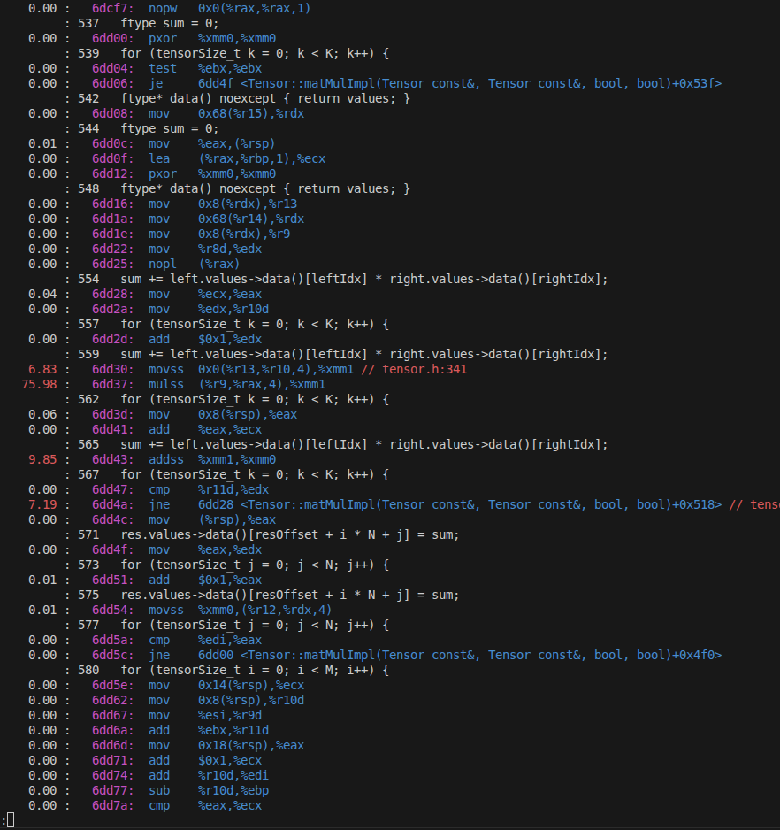

Now we have reached the last post of this initial series. After implementing a full MNIST training pipeline end-to-end in both C++ and CUDA
and giving it a Python binding to be compiled into a Python module, we are ready for our last optimization, the C++ backend optimization.
Because we already walked over the source code this time we can dive right into the optimization work. In the following we will learn about
some CPU-native features, specifically looking at x86-64 (in the following only x64), among other optimization techniques. For everyone not familiar
with x86 I give a small optional primer that will be enough for you to follow this blogpost, given you are familiar with assembly language in general.
About the profiling tools, I personally run Linux, and the
profiling tools of choice are Valgrind and perf. Since Valgrind requires us to set compile flags so that it can hook into the program we
need to recompile every time we want to analyze it with Valgrind, but still want to compare with the actual release version. perf is the simpler
tool for that, so this post will be using it throughout.
Optional: RISC vs. CISC, and where they stand today
For all those who want a refresher on x64 or who haven't had contact yet, this is for you. I assume you are familiar with assembly
code. If you do not know what x86 is, in brief words, back in the days when computers started out there were two philosophies
as to how to design CPUs, known as RISC (Reduced Instruction Set arChitecture) and CISC (Complex Instruction Set arChitecture).
The difference, in my own faul words, is that RISC kept things simple. Instructions are reduced the very ones necessary to perform
the desired operations. CISC on the other hand has more complex instructions. One instruction might fetch data from memory, add an
operand on top, and save the data at a target address. Without digging the whole rabbit hole as what has happened since then, I
still find it interesting to see why that was, and mark the trade-offs clearly.
Let's go a little back in time: Phones had actual buttons to be pressed when dialing a number,
people still knew how to keep a proper conversation and the value of communities, and RAM in computers was in the KB range.
In order to reduce instructions to be held in memory the CISC community designed their CPUs in a way that one instruction
would do more of the work. That meant less instructions and thus more compact code for any compiled and executable program.
This trade-off was to be marked by more instruction decoding logic and wiring on the actual chip. Chips using this kind of
architecture are the ones designed and produced by Intel and AMD.
On the contrary RISC uses less instructions, but each instruction is necessary and serves a clear purpose. Advantages of this
architecture are more ways to optimize nowadays for compilers, since they can shift independent instructions around. That is,
instructions are not necessarily executed in the order you wrote your program in if the compiler determines it found a better
ordering. Another advantage is that the final CPU itself has less need for instruction decoding, and is thus likely to be simpler
and energy efficient (less wires to maintain). RISC architectures are known from ARM (Advanced RISC Machines) and the open-source
RISC-V (say RISC-five) instruction set architecture.
For the last decades CISC architectures have been dominant, especially in PCs dominated by Intel and ARM CPUs. However, with the
advent of smartphones the playing field has shifted a little bit. One determining factor of the quality of smartphones has been
energy efficiency, i.e. how long your phone can last before it needs a recharge. The energy efficiency of RISC architectures dominates
here, with virtually every smartphone running RISC chips. The next battleground has become laptops, where energy plays a crucial role
as well. The era has infamously been heralded by Apple phasing out Intel CPUs in favor of in house Apple-M chips.
However, RISC CPUs still dominate a large market share, if only for the reason of being established well. Additionally, companies have
responded. For instance, my laptop has an Intel i5 of the Raptorlake generation. In addition to having the usual fast CPU cores, four of
them in total, it also boasts four efficiency cores. Those are CPU-cores running at lower clock-speed, but in return they consume less
power than the fast cores. The core idea here is that processes consuming raw computing power run on the power cores, but more lightweight
processes get executed on the energy cores, say a simple browser or a calculator. So while x86 architectures have lost ground they are far from
over, and the playing field keeps on shifting.
Optional: Primer on x86-64
This is a brief section intended to familiarize you with the basics of x64, so that you can follow the discussions below. If you already
know it well you can skip this section. To start off, let us start with what x86 is. If you read the discussion above about RISC-vs-CISC then
you know that it is the architecture mostly run by Intel and AMD today. Unfortunately for us their commitment to backwards compatibility means
for us that we now have to deal with a lot of historical baggage accumulated over decades.
Intel notation vs. AT&T notation
We start off with the notation. Unfortunately there are two main ways to write x86 assembly code. The first is the AT&T notation.
This style of x86 is marked by a ton a %-symbols, which is mainly how you identify it. It writes intructions in order
instruction source, destination. Registers are prefixed with %, and immediates are prefixed with $. On top of that, it has
instructions suffixed with operand size. b stands for byte, w for word (16-bit), l for long (32-bit),
and q for quad (64-bit). For instance, an
addl $10, %eax adds the value of 10 in 32-bit value encoding onto whatever is stored in register eax (registers in more detail later).
On the contrary, the Intel notation writes instructions as in instruction destination, source, the reverse of what the
AT&T notation does. Immediates and registers have no prefixes. It does also not use the size suffixes given by AT&T. Instead, the operand sizes
are inferred by the register name used. Later we will see that backward compatibility also meant that the same registers have been reused by Intel and ARM,
making them larger and giving them naming conventions as to how we want to use them. So to sum this up, the same instruction above in Intel notation
would just be a simple move eax, 10.
There are additional differences in addressing modes, especially indirect addressing mode. But to make things simple we will choose one of the two
in the following. I personally like the Intel notation a little better, since I find it simpler and more intuitive to read. Due to historical reasons
however Linux tools often by default use AT&T notation, unless explicitly told to output Intel. So the assemly code I got out of perf has all been
in AT&T notation, so for the remainder of this blogpost we're gonna roll with AT&T notation.
Operand sizes and registers
Optimization
In the following we are going to repeat the pattern we established in part 3.
That is, we are going to optimize the CPU backend step by step. Each step will be accompanied by a commit hash, times before and after,
a profiler output, and an explanation of what happens beneath the hood.
As for the benchmark, I am going to learn from my mistakes and
am going to run the benchmarks on the whole epoch, rather than a subset of it until later. That means that this time we are going to
have the same benchmark from beginning to the end. The benchmarking script will be the same as in the previous part as well,
except that this time we are going to not put our tensor onto the GPU. So let's get started with fix 1.
Opt. 1 - Use more aggressive compiler optimization
{% include pytorch-opt-summary.html
before="58.5491s" after="60.3818s"
speedup="0.97x" commit="36fd56de172dd62d53f5bf6ce7a7f2d084a4d7d6" %}
Before we any optimization, we first run a profiler. I used perf for this purpose, where we can get metrics such as time spend on program,
giving us a call tree, and we can profile for individual metrics. We are going to use the tool extensively, and you will see various
examples of what it is capable of. For now we want to see where our computation time flows. perf gives us the following as to where it
spends most of the execution time:
We can further use perf to look into the assembly code, where we get more details of what is happening. We find the following for the inner
loop of the matmul:
The most telling sign for now is the ss-suffix, indicating single operand instructions. My machine is an Asus laptop with an Intel i5 210Hx12,
and running cat /proc/cpuinfo | grep flags | head -1 | tr ' ' '\n' | grep -i avx in bash reveals that it is AVX and AVX2 capable.
Hence the compiler should auto-vectorize the loop using SIMD instructions, but somehow it did not do that.
Since so far we did not specify an optimization flag it is the
most natural solution to first try to use a more aggressive optimization. If you want to follow this step, simply add the line
set(CMAKE_CXX_FLAGS_RELEASE "-O3 -DNDEBUG") in CMake. While the program executes as expected, that is the optimization did not
introduce errors so far, the improvement is zero to actually a little worse than before. Looking at perf again we find that the compiler
still did not vectorize the loop, meaning the compiler somehow has troubles figuring out that there's gold to be found here. I cannot determine
at the moment whether the slower time is noise or a genuine regression, and while I could dig deeper into the matter my time is stent wiser
elsewhere, so let's stick with what we got right now, and in the following steps we will take matmul matters into our own hands.
Opt. 2 - Implement tiled matmul
{% include pytorch-opt-summary.html
before="60.3818s" after="13.0654s"
speedup="4.62x" commit="2fa0fbadbcd2b6f6bbc90a35a832f855d403bd3f" %}
This one unsurprisingly slaps big time, since we already saw the largest improvements from the CUDA side on this one.
I also note that for brevity I cut this blogpost a bit short, since I mainly repeat myself here if you have seen the previous post.
Before we start we just verify what we already have learned there though, so in the following two images showing our perf output.

TODO

TODO
To fix the issues, let's look at the matmul we're actually starting out with.
// src/backend/data_modeling/tensor.h
template
void Tensor::matMul2DCpu(Tensor& res, const Tensor& left, const Tensor& right, const tensorSize_t resOffset,
const tensorSize_t leftOffset, const tensorSize_t rightOffset) {
const auto nRowsLeft = static_cast(left.dims.get(-2));
const auto nColsLeft = static_cast(left.dims.get(-1));
const auto nColsRight = static_cast(right.dims.get(-1));
const auto nRowsRight = static_cast(right.dims.get(-2));
const tensorSize_t M = transposeLeft ? nColsLeft : nRowsLeft;
const tensorSize_t K = transposeLeft ? nRowsLeft : nColsLeft;
const tensorSize_t N = transposeRight ? nRowsRight : nColsRight;
for (tensorSize_t i = 0; i < M; i++) {
for (tensorSize_t j = 0; j < N; j++) {
ftype sum = 0;
for (tensorSize_t k = 0; k < K; k++) {
tensorSize_t leftIdx = transposeLeft ? leftOffset + k * nColsLeft + i
: leftOffset + i * nColsLeft + k;
tensorSize_t rightIdx = transposeRight ? rightOffset + j * nColsRight + k
: rightOffset + k * nColsRight + j;
sum += left.values->data()[leftIdx] * right.values->data()[rightIdx];
}
res.values->data()[resOffset + i * N + j] = sum;
}
}
}
I note here that I already have silently introduced an optimization that happened on the CUDA side,
namely the template overloads. Other than that the kernel should be obvious, since this is the looping and
index arithmetics we already have seen before. In short, it is a plain naive matrix multiplication. In the
following we are going to introduce the following fixes to it:
Use tiles to increase cache locality.
Use separate paths for transpositions.
Use SIMD instructions to execute the inner matmul more efficiently.
Because this time I want to spare you (and me) the indexing hell introduced in CUDA I introduce an extra struct
here, representing the tile we load in. Its definition looks like this.
The tile is pretty much self-expanatory. I templated the struct so that we can exchange the datatype easily, but also in case we have
need for it somewhere else. I also introduced three template parameters indicating the dimensions of the tiles for both the left and
the right tile, albeit for now I only support quadratic tiles, so this part of the code is a hot candidate for some small refactoring.
The tiles are stored as std::array types, increasing run-time through data locality compared with the std::vector data-type.
Interesting is the alignas(MemoryLayout::CPU_TENSOR_ALIGNMENT) instruction. MemoryLayout is a simple lookup-struct where I
hardcoded some information about my memory layout that could be interesting.
// src/backend/utility/memory_layout.h
struct MemoryLayout final {
// aligning memory allows us unsafe/faster memfetches into AVX registers
constexpr static unsigned int CPU_TENSOR_ALIGNMENT = 64;
// assumption needed e.g. for avoiding false-sharing
constexpr static unsigned int CACHE_LINE_BYTES = 64;
// L1 cache size in bytes, depends on CPU. E.g. 48 * (1 << 10) == 48 KB
constexpr static unsigned int L1_CACHE_BYTES = 48 * (1 << 10);
// L3 cache size in bytes, depends on CPU. E.g. 12 * (1 << 20) == 12 MB
constexpr static unsigned int L3_CACHE_BYTES = 12 * (1 << 20);
};
Although they look really cool for now I did not use the information about my cache-sizes. They could come in handy in later optimization
steps, e.g. by checking whether a data structure actually fits into one of these. The CPU_TENSOR_ALIGNMENT is the interesting one now.
TODO